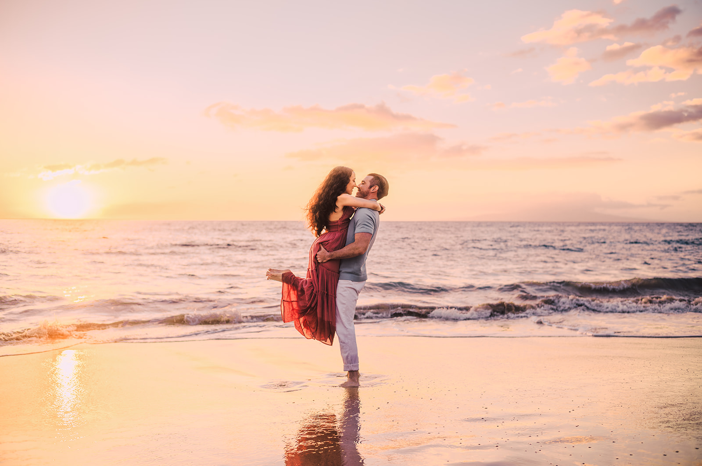
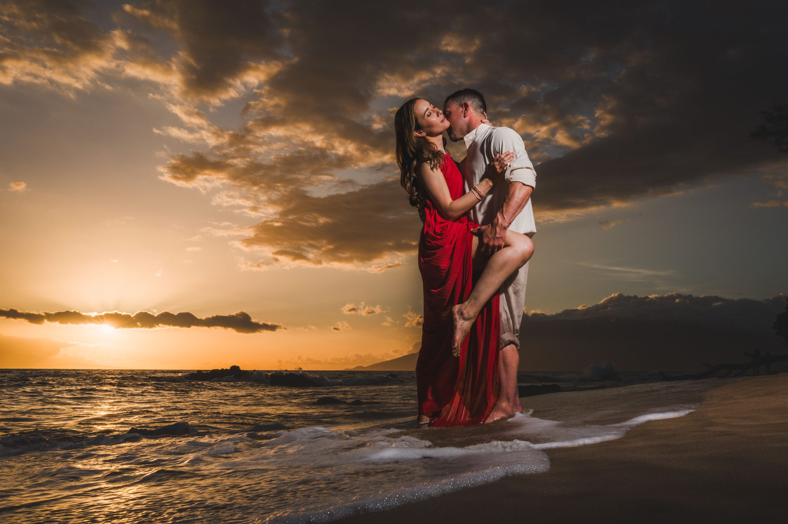
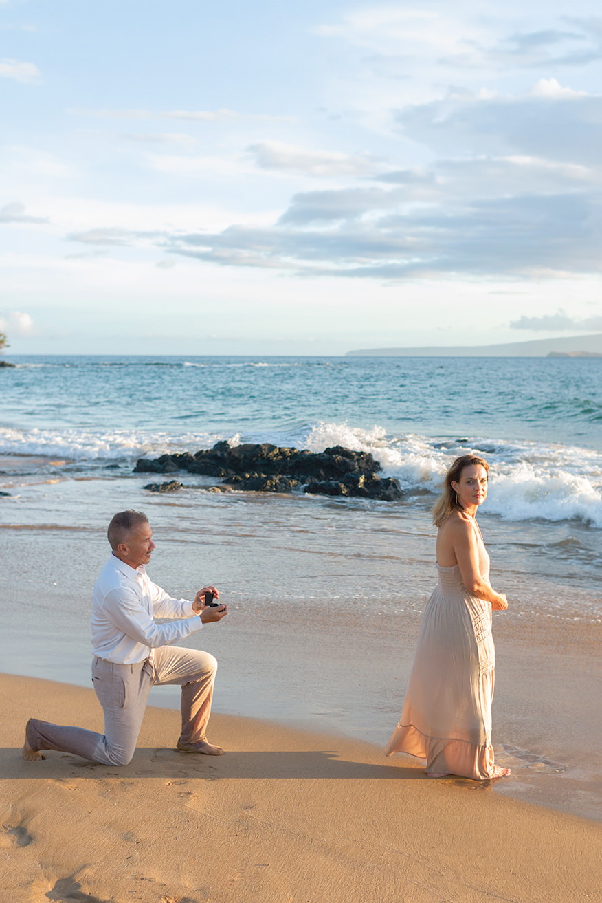

Your story, in motion.
Romantic portraits shaped by Maui light and the way you naturally move together.
You never need to know how to pose.
We guide the setting, light and movement so you can focus on each other. The result feels cinematic without feeling staged—warm, alive and true to your relationship.
Celebrate an anniversary, engagement, honeymoon or simply the rare pleasure of being away together in Maui.
As a Maui couples photographer, we work with engaged couples, honeymooners and anniversary trips across Wailea, Makena and South Maui, choosing the light and location that matches the mood you want.
Schedule Your Session Now



Years learning how Maui light becomes part of your story.
Local · Family Run · Never Outsourced
What couples ask us first.
How much does a Maui couples photography session cost?
Sessions start at $249. Current pricing and availability are listed on our Sessions & Pricing page.
Do you photograph engagements as well as anniversary or vacation couples sessions?
Yes. We photograph engagements, honeymoons, anniversaries and simply couples wanting portraits from their Maui trip.
What is the best time of day for couples photos in Maui?
Golden hour into sunset gives the softest light and richest color, though sunrise sessions offer the same quality of light with fewer crowds.
How far in advance should we book?
A few weeks to a few months ahead is recommended, especially for sunset time slots during peak travel season.
Do you photograph couples outside of Wailea?
Yes. While based in Wailea, we work throughout Makena and South Maui depending on light and location.
Make Maui part of your history.
Choose a session designed around the feeling you want to remember.
View Couples Sessions